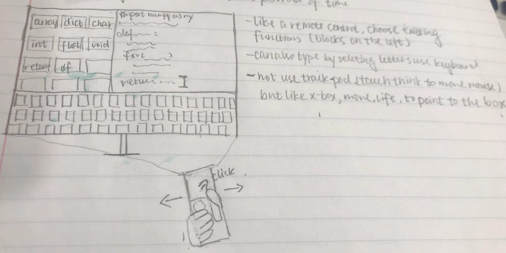

Week 8 In-Class Prototype
|
|
 |
|
|
 |
Reading Assignment 8
Posted 10/17/2019
For first 2 readings, a couple things I learned I think it's very useful for this chapter is that finding balance between hierarchy and balance is significant for a visually pleasant design piece. Take a grid for an infograph for an example, the difference of font size showed the hierarchy in the infograph. Normally, the biggest font will be the title. Followed by sub-titles for each section and sometimes numerical data like a percentage. The bigger font, bold font will be the top hierarchy that draw viewers' attention first. So when we are desiging things, if there are words/numbers we want to users/viewers notice the first place, we can use the hierarchy to achieve that. Balance is important. In a grid system, you need to make sure that the design for left/right part, upper/lower worth the same weight, if a design is graphic-heavy on left part of the design, make sure there are text, words of other type of information on the right part to make the design looks balanced. Balance doesn't mean symmetric, but a feeling of visual harmony that you can bring in. I can apply what I learned here for our group project whrist band design that though we have a tiny display screen, but when showing up warning messages, need to make sure that use different hierarchy level to present to now high the risk is.
Another thing I learned from the second reading is the usage of white space. What I learned from it is that a large amount of information doesn't mean its a good poster. White space (negative space) is an integral part of the design that help with the grid system forming and the same time can also help people to fucus on the main object (like a graph or a picture) for the design without overpowering the reading for too busy design and too much information. Using this on our whrist band design, I think it is a good idea to simply showing a diagram on the surface of the screen, use simple number and color to show users the information they need to know by a simple glance.
From the third article, what I learned from it is that it is possible to use different features like color, shape, angel, size, orientation to dispaly the redundant properties. However, when the features we choose are conjuctions, it will slow down the finding process a lot. This apply to our project that when we are trying to group different user cases, rather than staying at a high level, it will be helpful and easier go to a layer lower trying to find more commong, characteristics in sub-groups.
|
|
|
Week 7 In-Class
|
 |
Reading Assignment 7
Posted 10/16/2019
The everyday task that involves technology is microwave, specifically the one in my apartment, here are 2 pictures of it.
|
|
|
Like what you can see in the image, majority of gulf of execution are good like the different choices of what type of food you are cooking, choices of defrosting/reheat is nice that we can deirectly click the botton. The things are confusing are 1. Time cook, 2. timer (on/off). 3. display on/off with a bracet with start/pause, and cancel/off, 1. Time Cook. Normally when I'm using the microwave, I don't click "Time cook" at all. Based on my former experience of using a microwave, I directly click "1", "2" or "add 30 sec", and right after click, the microwave will start heating my food. Therefore I have no idea what "time cook" bottom here used here. 2. timer (on/off) As you can see from the first picture, there is no display on the screen, but when click "1" for one minute, the timing will start, so I assume that button is to turn off the timer, but I never used it. 3. Display on/off (not a bottom) at the middle top of "start/pause", "cancel/off". What confused me is what is this option different from "timer (on/off)". For me timer display is part of the display as well, so what is this display turning on/off? There is no display on the microwave currently because I was too lazy to set the time, so the system just automatically set the display as off?
Similar problem of gluf of evaluations in the book, this microwave at home has a handle and I know it is used to pull the microwave door open, but when I first tried to open, it is locked and doesn't seems like to be able to open just use strength. It lacks of signifier to show me what should I do to open it. Then I realize there was a "rectangle" without any mark of sign onside at the right lower hand of the microwave, I was messing with it, and it turned out the door can be opened by pushing that button. So the handel is only used to close the microwave?? They why we need the handle there, if we only need to close it manually. Second problem is the clock display. I didn't personally turned off the display of any kind, so when is not microwaving, there is nothing showing on the scree. When I first noticed it without know what is going on I though the microwave has burned the cord (since I pluged my microwaved in use a heavy-duty extension cord). However, you can see in the second picture, when the door of microwave is open, it is lighted up inside. It lack of feedback showing me the microwave is plugged in and ready to work.
#1 of Nielsen's heuristics: "Visibility of system status" failed for this task. Like mentioned above, it looks unplugged or no power going through microwave when the door is close since there is nothing showing at the display screen (picture 1). It kind of failed #2: Match between system and the real world on the handel design, just like what do you need to pull/push a door, handle normally is signifering that we need to pull it open, but this microwave specificlly, doesn't need a handle to pull a door open, the action of openning the door is achieve by pushing a un-noted button. It also failed #8: Aesthetic and minimalist design for how the button designed, the ones I mentioned above are hardly ever used and I think put them onside are more confusing.
Reading Assignment 6
Posted 10/05/2019
At this stage of our project, we are thinking about a Haptic/Visual wrist based information device that can warn people who have airborne allergy when they got exposed into the potential allergen by viberating, and color change on their whist band. Since our task is pretty specific, not like what Li's project had, I think the suitable prototyping technics for our project will be vertical prototyping and senario-based prototyping, and mock-up.
We are still in the early stage of our project so use mock-up whist band will be a good idea, which will be a vertical prototype because the actual functiona hasn't been implemented yet. Since our task is small enough that we are trying to warn people visually, haptically on the band, we need to consider different senarios more like what are the potential time, situation people might run in, then what is the different ways we are going to build our prototype that able to deal with different senarios. Surveys and interviews are the first step to gather enough infomation to see what different senarios we might have, and then we can go from there.
Week 5 In-Class
|
|
Reading Assignment 5
Posted 09/29/2019
I think the reading mentioned important things when we are sketching. Simple shape, clear representation. Leave out the unnucessary details and trying to use symbols (arrows, fingers), color, different shading to highlight the current step on the storyboard. When thinking about user interactions, we also need to make sure out sketching, storyboard contains all steps without skipping one. The storyboard need to show each stage, if missing one, user will have no idea how to jump from the former step, if it contains too details, the interactions might be miss-led.
In my storyboard, I drew finger/hand in each stage because when we are using the touch screen phone now, the main interaction is user clicking. Start with Choosethe Message App -> Touch pper right icon to draft a new message -> Choose add contact (plus sign) -> hoose target contact -> Click image icon under the text box -> Choose picture -> Send by touching "+" icon next to text box-> Picture sent.
Here is my storyboard.
|
|
Week 4 In-Class
|
|
Reading Assignment 4
Posted 09/22/2019
Articles chose: Interviews and Focus Groups, How Teens with Visual Impairments Take, Edit, and Share Photos on Social Media , and Freedom to roam: a study of mobile device adoption and accessibility for people with visual and motor disabilities.
I agree that interview is a lot harder than doing a survey. In my own experience, a good interviewer need to do a lot of preperation. First, know the topic and know related knowledge of the related fields; second, have a set of questions fixed for each interviewees; third, have the ability to expand the questions further based on different responds. To collect useful data, have focus group for interview is a good way, but it does require a lot of work to make sure interview questions are well-formed and cover all aspects of interests, angles for our studies. If I'm going to interview people, I will be the one asking for help or go with a partner who is better at interviews.
I chose the other 2 papers because they are related and I find fascinating. For both of the studies, they conducted focus group interview and also did individual interviews. They tried to categorize sub-groups among their focus group to analyze the result based on different situations, which I think it's really smart and useful to do to this. I think if my group is going to conduct inerview for our project, we will defintely do in a similar way. What I find surprising for the How Teens with Visual Impairments Take, Edit, and Share Photos on Social Media paper is that I would have the same assumption that teens with visual impairments will have little interests on taking, editing and sharing photos on social media. What I learned from that is that sometimes assumptions are dangerious, when doing research, or design things for a focus group, a good interview and study without taking things for granted is important. For both paper, I think though the phone/social media apps are not hard to use for people with visual impairments, improvement are need for the design of both hardware (size, texture...) and software (plug-in, screen reader) to make a better user experience.
Week 3 In-Class
|
|
|
Reading Assignment 3
Posted 09/15/2019
Articles chose: Research contributions in human-computer interaction, Design: Cultural probes, and Why Youth (Heart) Social Network Sites: The Role of Networked Publics in Teenage Social Life.
The first article is showing 7 different research contribution types in human-computer interaction, and showing the statistic that how people are using them in their research. I think it will be really useful if we are doing any research in the future. For our class project, I think it let us be more aware of the data, papers we are reading.
For the article Design: Cultural probes, I chose it thought it is talking about different countries' culture and how that play in the role of HCI. It is a very useful article in my opinion because it shows an awesome way to approach to a groups users that designers/programers are not familiar with. The way it is trying to get to know them, communicate with them and gathering data is really smart and well designed that it is like doing survey but doing it in a more open-ended way. I like the way they set up the "gift" with questions and devices that let elders record certain aspects of their daily life. They didn't make assumptions but trying to let the data tell the story. I think it is not only a good way to understand where users' at, it is a very good way to get to know people and build personas when facing a unfamiliar user group without assume what is the problems, what is the solution. See what's their life look like, and hear what data tells you.
For the last article, I chose it because I'm curious what is the assumptions from it. In my opinion, I think social life is part of teenagers' daily life for the modrn time. It gives them a space to be who they truly are, to be a different person, or gives them a chance to breath. I like the people who conduct meeting defined what is "teenager" first; take MySpace as their main sample frame cuz it's popularity; and take 2 years to conduct interviews and trying to see how different types of teenagers' interactions with MySpace. How they started, how they feel, the need for MySpace to become "my space", internations with friends in real life and strangers, and interactions with parents. I think it is a very good research back in that time with the considertaions of the generation difference and different access of the network. What I learned from this article is that when conduct research, take account of the time background and different groups of people (users).
Week 2 In-Class
|
|
Reading Assignment 2
Posted 09/07/2019
The idea of having personas is not new for me but it is the first time get my attention and realize how important it is. Rather than saying users, personas are better just like what they said in the article that "Personas are fictitious, specific, and concrete representations of target users." I like the detailed example of the SONY airplane entertainment system design process that how they identify their primany personas among customers and among crews; and how they change the design to make the design works great for all of them based on different neds. Like the article said, it is very important to create personas and use personas carefully. In their case, they narrow 30+ personas down to 4 main ones, which cover different potential users-need and go from there. Like they said creating personas with data and evidence is way better than based on solely assumptions. For SONY case's primary personas, designers need to change the design for different needs. Creating personas with some precision giving personas characters, which helps to solve potential problems for different personas (user groups).
Another thing I learned from the reading is that rather than design to solve all potential problems, design specifically. It is not practical to design a car fit all soccer mom, the carpenter, and the junior executive's needs because it's so different. Design for a specific group that fit all their needs is the goal. I liked the idea in the chapter talking about "elastic user", and as software developer, we should make our program "flexible" that able to fulfilling the need for the target user group (primary persona). I think its a good idea that what we do is just to solve 1 problem, which make the design, thought process deeper and help developers/designers to think about 1 problems in depth rather than thinking about 10 prblems and not solving any of them well.
Here is my task model for writing a CS homeword/assignment.
|
|
Week 1 In-Class
|
|
Reading Assignment 1
Posted 09/02/2019
The design and ideas show up in today's shopping cart are the wider handle, the size of the cart and higher portion of plastic usage. For my experience, Target's shopping cart has wider handle that you can put drink in and the same time provide kids a bigger surface. As I notices, the size of their final prototype is pretty big that can contain 3 basket on one side, shopping carts now, especially the ones in Target and Ikea are big, which are not like majority of the original shopping carts. Then the usage of plastic to reduce the weight of the cart for easier control.
4 main ideas I saw didn't make to today's shopping cart are the baskets in the cart with the hook, kids seat, portable price-checking/calculator on the cart, and the multi-directional wheel. For baskets usage in the super market, when people chose to take a basket means that they don't have much things they need to buy. Adding multiple basket in a big shopping cart is too much work. When people go to supermarket, its extra steps you need to load your cart with basket first. In addition, grab the basket and leave the cart will have unattended belonging issues and the common space will be a mess as well. Second issue: kids seat. In my opinion, it is not safe for the design they have, if parents can lift the handle to put kids in, kids might accidently lift the handle themselves that cause security issues. Third, tech on the cart. It is a very nice thought that people can check the price whenever they need and then add them up when they decide to buy, but the problem is it is very easy to lose that it is too small and easier to got stolen. Also high maintenance, need to charge it, put it back and check if the machine is broken. As for multi direction wheel, it is convienent but might not be safe when staff are carring dozen of cart at the same time or when the floor is slanted and kids are inside. Also I think the super market are normally build in the way that the original wheel words just fine.
Groups of people design team talked to are people who made shopping cart, who use shopping carts and who manange shopping carts. It's very important to have conversation with them because they are the "experts" in that field. Compare to staring at the product itself, go out and do a field study, asking people who use it manage daily to see what kind of problems they are facing for the hours of times they are using it. It's important to step out of our own thought box and to see what people are experiencing, problems exists that we they might take for granted or didn't even thought of.